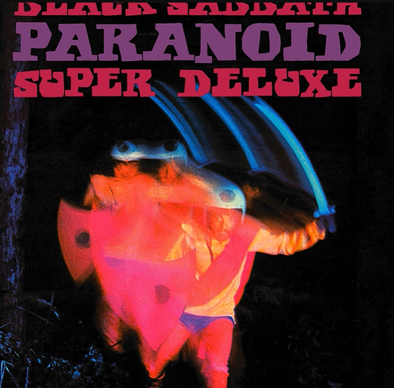

/sistema/trilha-sonora
Antes de continuar…
Coloca a trilha dessa história 🎧
Iron Man — Black Sabbath

A música começa direto na parte com vocal 🎧
/sistema/relatorio
Relatório técnico sobre você
Nível de beleza
suspeitamente alto
Nível de carinho
acima das especificações
Capacidade de me deixar sem jeito
100%
Vontade de te ver de novo
crítica
Status atual
tô gostando dessa menina
Coisas que eu gosto em você
O jeito que você presta atenção quando eu tô falando.
Seu jeito carinhoso.
Também gosto do fato de você aparentemente ainda não ter percebido que eu sou meio esquisito.
Seu sorriso.
Quando você fica encostada em mim.
O jeito que conversar contigo parece fácil.
Você ri das minhas piadas. Ou é educada. Prefiro não investigar.
Seu jeito de demonstrar interesse.
O cheiro do seu cabelo.
/sistema/estatisticas
Estatísticas extremamente científicas
Documento histórico
Sim, temos uma foto. Estamos trabalhando para aumentar esse banco de dados.
Brincadeiras à parte…
Eu tô gostando muito de te conhecer, Larissa. Gosto do jeito que a gente conversa, dos nossos passeios e de como tudo parece leve quando tô com você.
Ainda estamos no começo, e talvez seja justamente isso que eu mais gosto: descobrir mais sobre você a cada vez que a gente se vê.
A gente já falou sobre futuro algumas vezes, e eu gosto de pensar que talvez isso que estamos construindo agora possa virar algo muito bonito lá na frente.
Não quero apressar nada, só quero continuar vivendo tudo isso com você, criando mais momentos, mais histórias e descobrindo até onde a gente pode chegar juntos. ❤️
Após extensa análise, chegamos à pergunta mais importante:
Você aceita sair comigo de novo sábado às 15h?
Resultado registrado com sucesso 😌❤️
Nos vemos no próximo sábado… ou antes, se eu não aguentar a saudade. ❤️